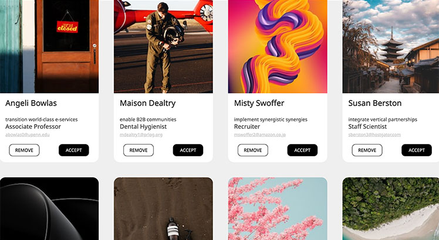

Design for Developers
Throughout this design theme I developed a better understanding about the font hierarchy that takes place in websites and how to use it. My perception about colors has progressed after understanding color harmony and the ratio between the different colors of the chosen color pallet, for a visually appealing solution.
